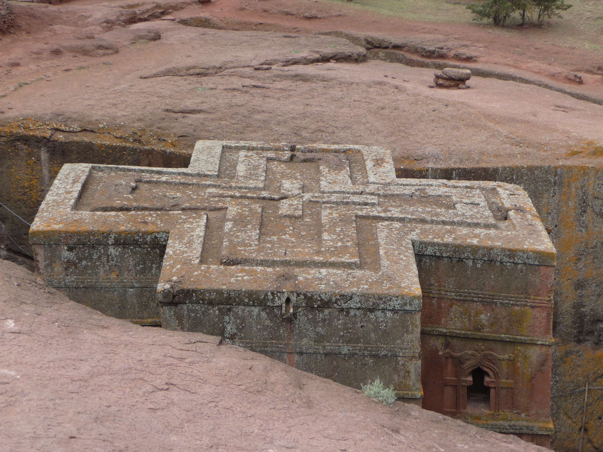

I was born in Addis Ababa, Ethiopia and migrated to United States after experiencing political unrest in Ethiopia. I have been leaving in the US and residing in Los Angeles area.
I got my BA in Design. I like colors and designs. My hobbies are making jewelry, photgraphy, collecting art and visiting Estate sales. I enjoy swimming, and I love to travel.